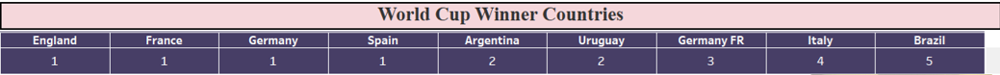
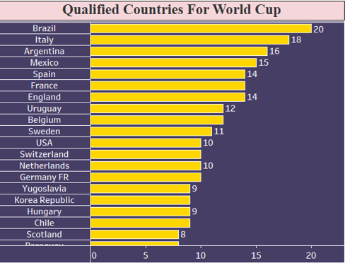
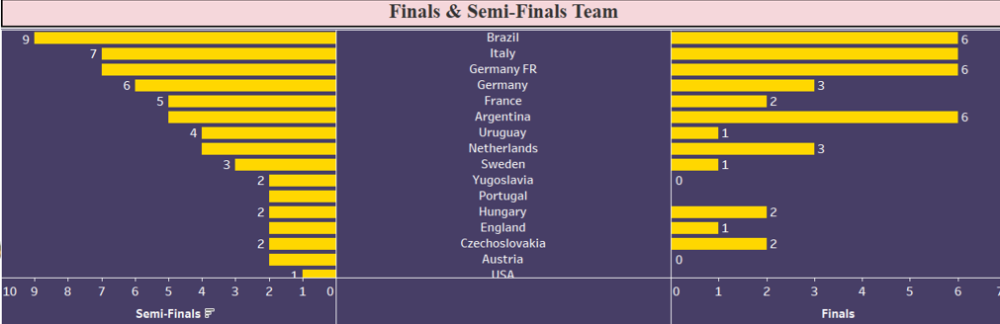
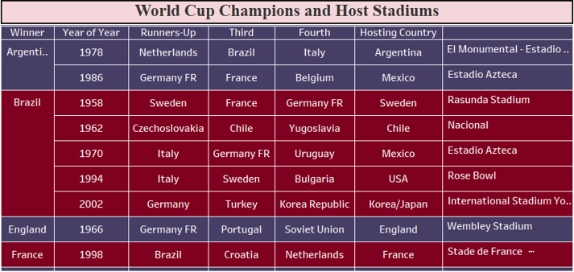

FIFA World Cup Data Analysis
Project Overview
The FIFA World Cup is the pinnacle of international football, a global competition contested every four years that captivates billions worldwide. This project, titled "FIFA World Cup Analysis," delves into the rich historical data of the tournament to uncover key metrics and factors influencing World Cup success.
Tools Used: Tableau, Excel
My Role: Data Analyst
Objective
- Answer fan questions about the World Cup.
- Identify metrics influencing success.
- Analyze winners, finalists, hosts, and qualifiers.
- Highlight key performance indicators (KPIs).
Dataset Description
- World Cups Dataset
- World Cup Matches Dataset
- Data sourced from FIFA official records and archives
Step-by-Step Approach Taken
- Data Acquisition
- Data Cleaning and Preprocessing (Python)
- Exploratory Data Analysis (Python/Tableau)
- Key Metric Calculation
- Dashboard Design and Visualization (Tableau)
- Insight Generation and Recommendation
Key Metrics Tracked
- World Cup Champions
- Finals Appearances
- Semi-Finals Qualifications
- Hosting Countries
- Win Percentage
- Yearly Trends
Dashboard/Chart Descriptions
Winner Countries: Displays a ranking of countries by the number of World Cup titles won. Brazil leads with 5, followed by Germany and Italy with 4 each. This chart allows for quick identification of the most dominant nations.
Qualified Countries Chart: Shows the total number of times each country has qualified for the World Cup. Brazil has qualified 20 times, followed by Italy (18) and Argentina (16).
Finals & Semi-Finals Teams: Two juxtaposed bar charts, one showing the number of finals appearances and the other showing semi-final qualifications for various teams. Brazil, Germany, Italy, Argentina, and the Netherlands have the most finals appearances. This visual directly compares consistency in reaching crucial stages.
Champions & Host Stadiums Table: This table lists the champions, runners-up, third, and fourth-place teams for specific years, along with the monumental stadiums where the finals were held. This offers a detailed historical record of final stages.
Insights and Final Recommendations
- Dominance of Brazil, Germany, Italy
- Emergence of Spain, France, Argentina
- Consistency in finals/semi-finals shows strong programs
- Possible advantage to host countries
- Growth in tournament scale over time
Learning Outcomes
- End-to-end data project management
- Advanced visualization with Tableau
- Python for cleaning and transformation
- Storytelling and KPI definition
Summary Table
| Project Title | FIFA World Cup Analysis |
|---|---|
| Tools Used | Tableau, Python |
| Role | Data Analyst |
| Business Objective | Analyze FIFA data for key success factors |
| Datasets | World Cups, World Cup Matches |
| Approach | Data acquisition, cleaning, EDA, KPI, dashboards, insights |
| Key Insights | Historical team performance, host advantages |
| Recommendations | Talent & coaching development, fan engagement |
| Learning Outcomes | Data storytelling, Python, Tableau, KPI design |
⬅ Back to Portfolio